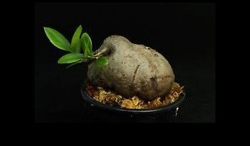
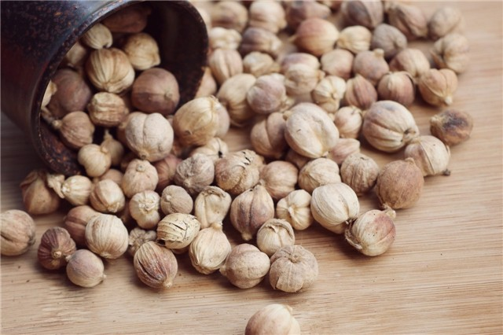
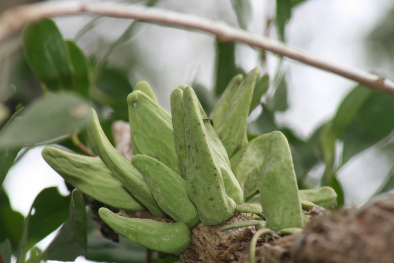
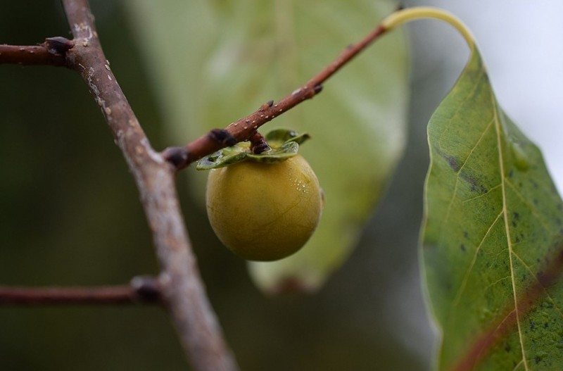
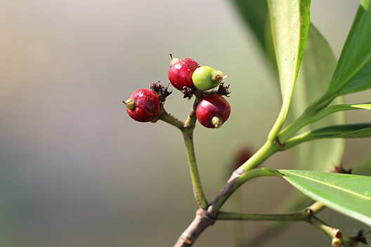

สมุนไพรไทย 22 ชนิดเสี่ยงสูญพันธุ์ ประกาศคุ้มครองและควบคุม 7 ชนิด
กระทรวงสาธารณสุข(สธ.) ประกาศรายชื่อ “สมุนไพรไทย” 22 ชนิดเสี่ยงสูญพันธุ์ ได้คัดเลือกสมุนไพร 7 ชนิด
ออกประกาศคุ้มครองและควบคุม ผู้ครอบครองต้องแจ้งจำนวนที่มี เพื่อทำแผนการใช้และการปลูกทดแทน โดย 7 ชนิดที่ว่า มีดังนี้
1. พิษนาศน์ หรือ ถั่วดินโคก

ชื่ออื่นๆ/ชื่อท้องถิ่น: แผ่นดินเย็น (อุบลราชธานี), ถั่วดินโคก (เลย), นมราชสีห์ (ฉะเชิงเทรา)
ชื่อวิทยาศาสตร์: Sophora exigua Craib
ลักษณะทั่วไปของพิษนาศน์: พิษนาศน์จัดเป็นไม้พุ่มขนาดเล็ก สูงได้ 15-30 เซนติเมตร ลำต้นลักษณะสั้นประมาณ 5-8 เซนติเมตร
ใบเป็นใบประกอบแบบขนนก ออกเรียงสลับ แนบกับพื้นดินมีใบย่อย 9-13 ใบ โดยจะเป็นรูปวงรี รูปไข่ หรือ รูปขอบขนานแกมวงรี
2. เทพทาโร
ชื่ออื่นๆ/ชื่อท้องถิ่น: ข่าต้น (ภาคกลาง), จะไคต้น, จะไคหอม (ภาคเหนือ), จวง, จวงหอม (ภาคใต้) ,มะแดกกะมางิง (มลายู), หวางจาง (จีน)
ชื่อวิทยาศาสตร์: Cinnamomum porrectum (Roxb.) Kostern
ลักษณะทั่วไปของเทพทาโร: เทพทาโรจัดเป็นไม้ยืนต้นขนาดกลางถึงใหญ่ สูง 10-30 เมตร ไม่ผลัดใบหรือผลัดใบระยะสั้น
เมื่อถากเปลือกออกเปลือกชั้นในมีสีน้ำตาลอมแดง มีกลิ่นหอมคล้ายการบูร
3. มะตูมนิ่ม
ชื่ออื่นๆ/ชื่อท้องถิ่น: มะตูม (ภาคกลาง), มะปิน (ภาคเหนือ), กะทันตาเถร (ปัตตานี), ตูม (ภาคใต้), บักตูม (ภาคอีสาน),
ตุ่มตัง (ปัตตานี), มะปีส่า (กะเหรี่ยง, แม่ฮ่องสอน), พะโนงค์ (เขมร), หมากปิ๋น (ภาษาไทยใหญ่)
ชื่อวิทยาศาสตร์: Aegle marmelos (L.) Corr
ลักษณะทั่วไปของมะตูมนิ่ม: ลำต้น มะตูมเป็นยืนไม้ต้น เนื้อแข็ง และกิ่งมีหนามขนาดใหญ่ แข็ง ตรง ผลัดใบ ความสูงประมาณ 10-15 เมตร
และบางพื้นที่ที่อุดมสมบรูณ์อาจจะสูงถึง 15-25 เมตร เนื้อไม้มีกลิ่นหอม ส่วน ผล ผลมะตูมรูปรีกลม หรือ รียาว มีเปลือกมีลักษณะเรียบ เป็นมัน เปลือกหนา และแข็งมาก
4. มะหาด

ชื่ออื่นๆ/ชื่อท้องถิ่น: เหาดขนุน ,ปวกหาด(ภาคเหนือ),หาด (ทั่วไป),ฮัด(ภาคตะวันตก),มะหาดใบใหญ่(ตรัง),กาอย,ตาแป,ตาแปง(นราธิวาส,มลายู),เซยาสู้(กะเหรี่ยง)
ชื่อวิทยาศาสตร์: Artocarpus lakoocha Roxb
ลักษณะทั่วไปของมะหาด: มะหาดจัดเป็นไม้ยืนต้นขนาดใหญ่ สูง 15-25 เมตร ไม่ผลัดใบ ทรงพุ่มกลม ลำต้นเปลาตรง
เปลือกต้นสีน้ำตาลอมแดงถึงน้ำตาลเข้ม ต้นแก่ผิวจะหยาบและแตกเป็นสะเก็ดเล็กๆ
5. เร่ว

ชื่ออื่นๆ/ชื่อท้องถิ่น: เร่วใหญ่ , เร่งน้อย (ทั่วไป),มะอี๋,หมากอี๋,มะหมากอี๋(ภาคเหนือ),กระวานป่า,เร่วกระวาน(ภาคกลาง),หมากเนิง,
หมากเน็ง(ภาคอีสาน),หน่อเนง(ชัยภูมิ),หมากแหน่ง(สระบุรี),เร่วดง(ตราด),ผาลา(ไทยใหญ่)
ชื่อวิทยาศาสตร์: เร่วสามารถแบ่งออกเป็น 2 ชนิด คือ
1. เร่วน้อย Amomum villosum Lour.
2. เร่วใหญ่Amomum xanthioides Wall. ex Baker
ลักษณะทั่วไปของเร่ว: เร่วจัดเป็นพืชล้มลุก มีเหง้าหรือลำต้นอยู่ในดิน มีลำต้นเทียมเป็นกาบแข่งโผล่เหนือดินขึ้นมา สูงได้ 2-4 เมตร
โดยเป็นพืชสกุลเดียวกับ กระวาน ข่า ขิง ใบเป็นใบเดี่ยว
6. หัวร้อยรู

ชื่ออื่นๆ/ชื่อท้องถิ่น: ป่าช้าผีมด (ภาคอีสาน), ตาสิมา, คาลูบูตาสิมา (ภาคใต้, มลายู), กระเช้าผีมด (สุราษฎร์ธานี),
ปุมเป้า (ตราด), ร้อยงู (ปัตตานี), กาฝากหัวเสือ (นราธิวาส)
ชื่อวิทยาศาสตร์: Hydnophytum formicarum Jack
ลักษณะทั่วไปของหัวร้อยรู: หัวร้อยรูจัดเป็นพืชจำพวกฝาชนิดมีหัว ซึ่งเป็นไม้ที่อิงอาศัยเกาะตามต้นไม้อื่น ลำต้นสูง 25-60 เซนติเมตร
มีลำต้นเป็นแบบอวบน้ำ โดยส่วนโคนต้นจะขยายใหญ่เป็นรูปกลมป้อม หรือ โป่งพอง
7. กระวาน

ชื่ออื่นๆ/ชื่อท้องถิ่น: กระวานไทยม, กระวานดำ, กระวานขาว, กระวานจันทร์, กระวานโพธิสัตว์, กระวานแดง (ภาคกลาง,ภาคตะวันออก), ข่าโคก,
ข่าโค่ม, หมากเนิ้ง (ภาคอีสาน), หมะอี้ (ภาคเหนือ), ปลาก้อ (ปัตตานี)
ชื่อวิทยาศาสตร์: Amomum krervanh Pierre ex Gagnep
ลักษณะทั่วไปของกระวาน: กระวานจัดเป็นไม้ล้มลุกมีเหง้าเป็นพืชใบเลี้ยงเดี่ยว แบ่งลำต้นออกเป็น 2 ส่วน คือ ลำต้นจริง คือ ส่วนที่เป็นหัวอยู่ใต้ดิน
ลำต้นเทียมเป็นส่วนที่เจริญจากตาหัวของแต่ละหัวหรือแต่ละแง่ง แทงโผล่ขึ้นเหนือดิน สูงได้ถึง 2 เมตร ลำต้นเทียมมีลักษณะทรงกลม สีเขียวเข้ม คล้ายกับลำต้นข่า แต่ใหญ่ และสูงกว่า
จาก 7 ชนิดที่กล่าวมา จะสังเกตเห็นว่า "กระวาน" เป็นสมุนไพรที่ถูกเสนอขึ้นมาเป็นพิเศษด้วยอีกชนิดหนึ่ง และนอกเหนือจาก 7 ชนิดที่กล่าวมา
ยังมีอีก 16 ชนิดที่เป็น สมุนไพรไทย ที่เสี่ยงสูญพันธ์ มีดังนี้
8. กระทุ่มนา
9. ขันทองพยาบาท
10. จุกโรหินี

11. ชะเอมไทย
13. ตับเต่า

14. นางแย้มป่า
15. ปลาไหลเผือก
17. มะคังแดง
19. สารภีป่า
20. อบเชยไทย
21. เฉียงพร้านางแอ

22. เถาเอ็นอ่อน
23. เปราะหอม
และจะเห็นได้ว่า มีจำนวน 23 ชนิด เพราะมีอีกชนิดเข้ามาคือ "กระวาน" สมุนไพรไทยดังที่กล่าวมา หากมีครอบครองถือว่าไม่ผิด แต่ต้องแจ้ง
มาทาง สธ. ให้รับทราบด้วยว่ามีจำนวนเท่าใด เพื่อไม่ให้สูญพันธ์